An artist statement
Forms and perspectives are the
two ends
of the 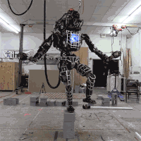art's balance.
Of course, they also translate into each other.
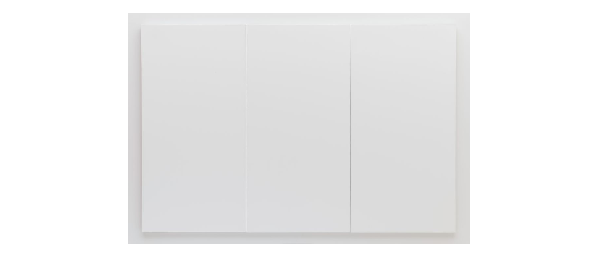
Since modernism, art history was the process of art self-awakening, a
" De-Instrumentalization"
process.
If art itself is taken as a form, it also negates the awakening of artistic self-awareness.
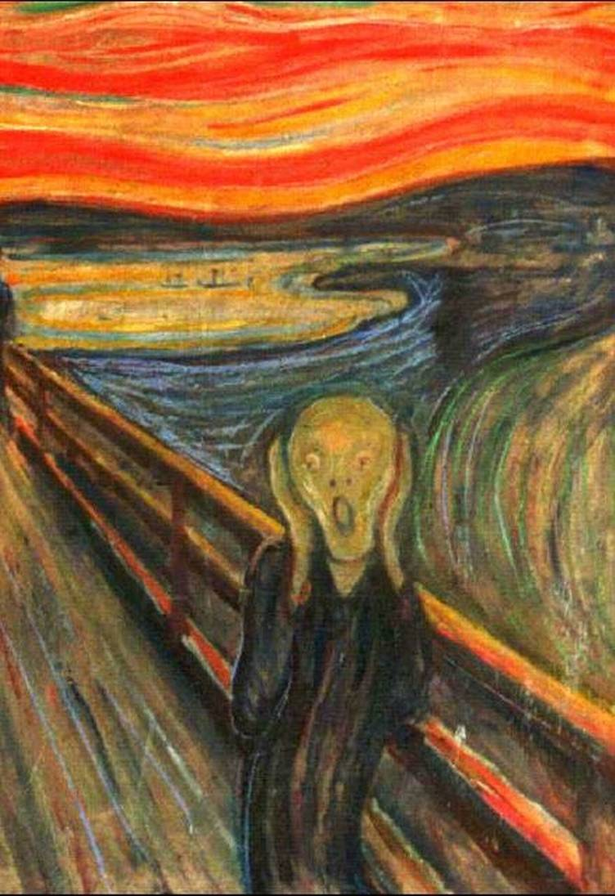
I am a
'Perspectivism' 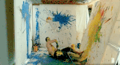 artsit.
(Not the ‘Perspectivism’ named by Nietzsche.)
I hope that the artists can not only play the critical role as public intellectuals, but also get involved into the real social movement.
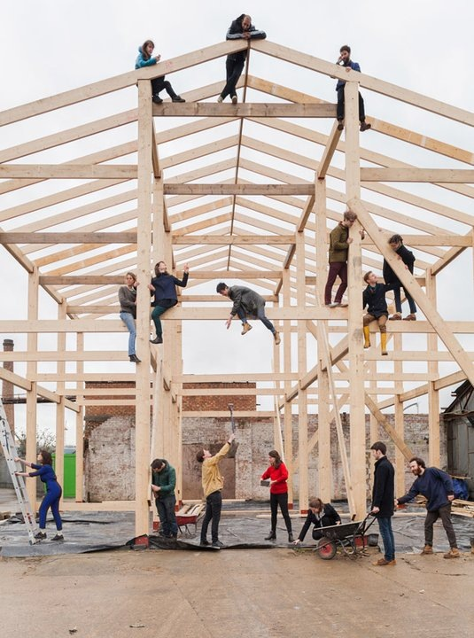
Artists are not
'object makers’
,but 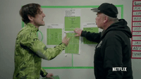
'event planners.'
The artworks are not "objects,” but “the ripples when stone hits the water."
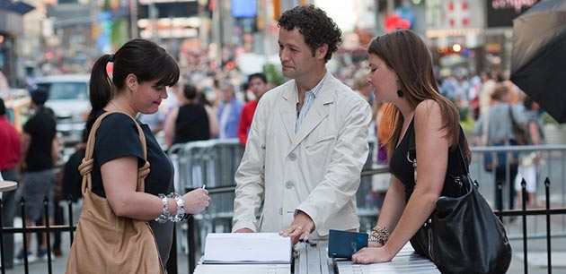
Of course, there is no definition of art
once and for all
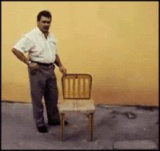.
Art plays different roles in different social systems, environments and stages of social development.
Art is
'a experimental pool’
,it is
fault-tolerant
.
But they should be logically self-consistent.
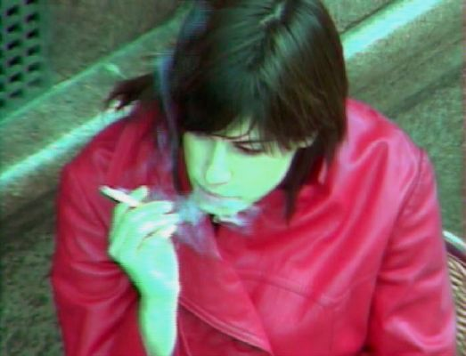
Therefore, artists should be 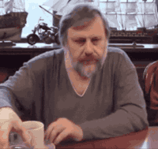
'Makers of Meaning.'
You need to become a selfish 'self-constructor’.
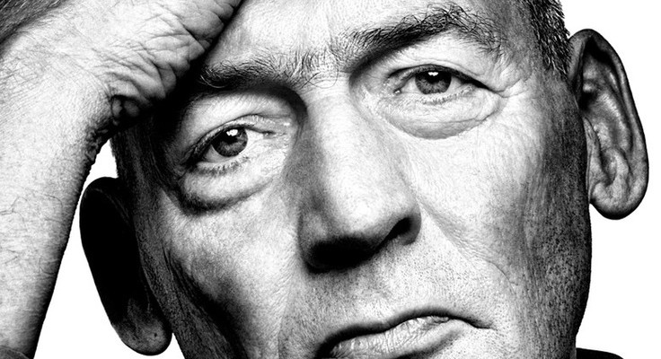